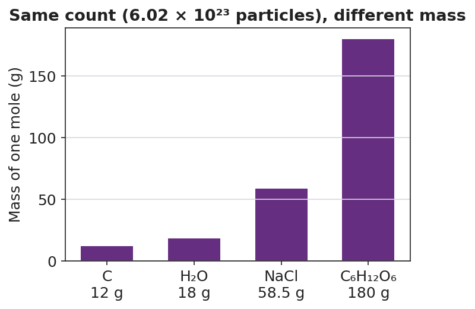

01 Phenomenon
Four containers are on the demonstration table. Each one holds exactly one mole — 6.02 × 10²³ particles — of a different substance: carbon, water, table salt, and table sugar. On the balance, the carbon reads 12 grams, the water reads 18 grams, the salt reads 58.5 grams, and the sugar reads 180 grams. Same number of particles. Very different masses.
Atoms are far too small to see and far too numerous to count one at a time — a single pinch of salt holds more atoms than there are grains of sand on every beach on Earth.
02 Driving question
How do chemists count atoms when atoms are far too small and numerous to see — and why does the same count of different substances weigh different amounts?
03 Notice & wonder
| I notice… | I wonder… |
|---|---|
Turn & Talk #1: A mole of carbon and a mole of water both hold exactly 6.02 × 10²³ particles — the same count. But the carbon weighs 12 g and the water weighs 18 g. In one sentence, how can the same number of particles have different masses?
04 Initial model
A single carbon atom has a mass of about 2 × 10⁻²³ grams — far too small for any balance to read. Chemists agreed to count atoms in a giant batch large enough to have a weighable mass.
Using the counting-by-weighing logic from the cup activity, answer:
- If one carbon atom is about 2 × 10⁻²³ g, about how many atoms would you need in a batch to reach a weighable mass of 12 grams? Show your reasoning.
Roughly how large is that number (write it in scientific notation)? _______________
Why does it make sense that the batch must be so enormous?
05 Investigate
Part 1 — ABCs: Count by weighing (with real objects)
Your group has a cup of identical small objects and a balance. Count atoms the way chemists do — by weighing.
| Step | What you did | Value |
|---|---|---|
| Mass of 10 objects | ||
| Mass of 1 object (÷ 10) | ||
| Mass of whole cup | ||
| Predicted count (cup mass ÷ mass of 1) | ||
| Actual count (by counting) |
How close was your prediction to the actual count? _______________
What single piece of information let you “count” the whole cup without counting most of it?
Part 2 — Moles ↔︎ particles conversions
Use the conversion factor: 1 mole = 6.02 × 10²³ particles. Set it up like dimensional analysis — put 6.02 × 10²³ on the top or bottom so the unit you don’t want cancels.
A — Moles → atoms: How many atoms are in 3 moles of helium (He)? Show your setup.
Answer: _______________ atoms
B — Molecules → moles: How many moles is 3.01 × 10²³ molecules of water (H₂O)? Show your setup.
Answer: _______________ mol
C — Moles → formula units: How many formula units are in 0.25 mole of NaCl? Show your setup.
Answer: _______________ formula units
Part 3 — Reading the bar chart
Look at figures/mass_of_one_mole.png:

Which substance has the largest mass per mole? _______________
Every bar represents the same number of particles. What is that number? _______________
A mole of sugar weighs fifteen times more than a mole of carbon, yet both hold 6.02 × 10²³ particles. Use the chart to explain why.
06 Make it make sense
Set up and solve each conversion. Show the factor-label setup so the units cancel. These are the same problems you practiced in the Investigation — confirm your work here.
1. How many atoms are in 3 moles of helium (He)?
Setup: _______________________________________________ Answer: _______________ atoms
2. How many moles is 3.01 × 10²³ molecules of water (H₂O)?
Setup: _______________________________________________ Answer: _______________ mol
3. How many formula units are in 0.25 mole of NaCl?
Setup: _______________________________________________ Answer: _______________ formula units
4. In one sentence, explain why a mole of carbon (12 g) and a mole of sugar (180 g) hold the same number of particles but weigh different amounts.
07 Key vocabulary
- mole
- the chemist's counting unit: a fixed count of 6.02 × 10²³ particles (atoms, molecules, or formula units); the mole lets chemists count atoms by weighing them, bridging the atomic scale (particles too small to count directly) to the laboratory scale (grams on a balance)
- Avogadro's number
- the number of particles in exactly one mole, equal to 6.02 × 10²³ particles per mole; it is a pure count with no mass units and is the same for every substance; listed on the 2025 NYS Chemistry Reference Tables
- molar mass
- the mass in grams of one mole of a substance (g/mol); the same quantity as gram formula mass; it depends on what kind of particle is being counted, which is why equal moles of different substances have different masses
Use each term in a sentence about today’s investigation. Do not copy the definition — describe something you actually did or observed.
mole: _______________________________________________ _______________________________________________
Avogadro’s number: _______________________________________________ _______________________________________________
molar mass: _______________________________________________ _______________________________________________
08 Revise your model
Return to your Initial Model (your “how many atoms in a 12 g batch?” estimate). Add vocabulary labels:
Draw a box around your batch-size estimate. Label it “≈ Avogadro’s number.” What is the accepted value? _______________
Label the 12 g with the correct term: _______________
Write a revised appositive sentence defining the mole:
A mole — _________________________ — is _________________________.
Then finish this Because / But / So sentence:
A mole of lead has far more mass than a mole of aluminum because __________________________________________, but __________________________________________, so __________________________________________.
09 Exit ticket
(a) How many atoms are in 2 moles of helium (He)? Show your setup using Avogadro’s number.
Setup: _______________________________________________ Answer: _______________ atoms
(b) How many moles is 1.204 × 10²⁴ atoms of iron (Fe)? Show your setup.
Setup: _______________________________________________ Answer: _______________ mol
(c) In one sentence, explain why a mole of lead (Pb) has more mass than a mole of aluminum (Al), even though both contain the same number of atoms.
10 Explore further
- "What does a mole look like?" demonstration: Pre-measure one mole each of carbon (12 g, e.g., pencil leads or charcoal), water (18 g ≈ 18 mL), table salt (58.5 g), and table sugar (180 g) into labeled, transparent containers. Add a fifth optional "non-chemical" station — one mole of marbles — to make the abstraction concrete: *one mole of marbles (each ~5 g) would weigh about 3 × 10²⁴ g, roughly the mass of the Moon.* Students hold/observe each container and record its mass. The takeaway: a mole is always the same count, but you measure it out by mass, and the mass differs for every substance.
- Counting-by-weighing analog: Each group gets a cup of identical small objects (paper clips, beans, or pennies). Students weigh 10, compute the mass of 1, then predict the count in the full cup from its total mass — then check by counting. This builds the exact logic of the mole before the number 6.02 × 10²³ is named.
- Bar-chart reading: Students read and interpret `figures/mass_of_one_mole.png` to answer: which substance has the largest mass per mole? Why does a mole of sugar weigh fifteen times more than a mole of carbon if both hold 6.02 × 10²³ particles?